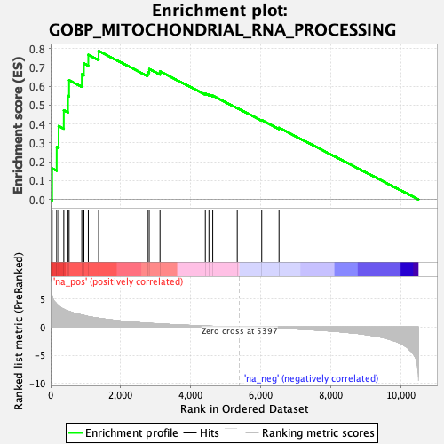
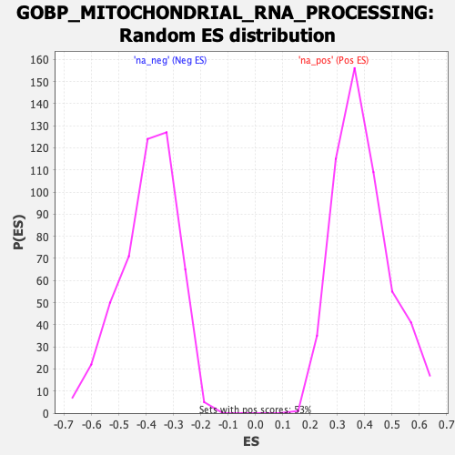

| Dataset | qlf.KOd4vsWTd4_gsea_score |
| Phenotype | NoPhenotypeAvailable |
| Upregulated in class | na_pos |
| GeneSet | GOBP_MITOCHONDRIAL_RNA_PROCESSING |
| Enrichment Score (ES) | 0.78651816 |
| Normalized Enrichment Score (NES) | 2.01213 |
| Nominal p-value | 0.0 |
| FDR q-value | 5.267317E-4 |
| FWER p-Value | 0.062 |

| SYMBOL | RANK IN GENE LIST | RANK METRIC SCORE | RUNNING ES | CORE ENRICHMENT | |
|---|---|---|---|---|---|
| 1 | PUS1 | 44 | 5.471 | 0.1644 | Yes |
| 2 | TBRG4 | 174 | 4.094 | 0.2783 | Yes |
| 3 | FASTKD3 | 229 | 3.759 | 0.3889 | Yes |
| 4 | TRMT5 | 377 | 3.157 | 0.4722 | Yes |
| 5 | ELAC2 | 498 | 2.841 | 0.5483 | Yes |
| 6 | SUPV3L1 | 528 | 2.791 | 0.6315 | Yes |
| 7 | TRMT10C | 891 | 2.133 | 0.6627 | Yes |
| 8 | PNPT1 | 951 | 2.066 | 0.7208 | Yes |
| 9 | FASTKD2 | 1077 | 1.863 | 0.7663 | Yes |
| 10 | TRNT1 | 1371 | 1.564 | 0.7865 | Yes |
| 11 | HSD17B10 | 2769 | 0.686 | 0.6745 | No |
| 12 | MTO1 | 2816 | 0.664 | 0.6905 | No |
| 13 | FASTKD1 | 3125 | 0.554 | 0.6782 | No |
| 14 | TRMT61B | 4419 | 0.187 | 0.5607 | No |
| 15 | FASTK | 4522 | 0.163 | 0.5561 | No |
| 16 | RPUSD4 | 4631 | 0.139 | 0.5500 | No |
| 17 | TRIT1 | 5331 | 0.014 | 0.4838 | No |
| 18 | FASTKD5 | 6030 | -0.103 | 0.4205 | No |
| 19 | CDK5RAP1 | 6524 | -0.205 | 0.3798 | No |
